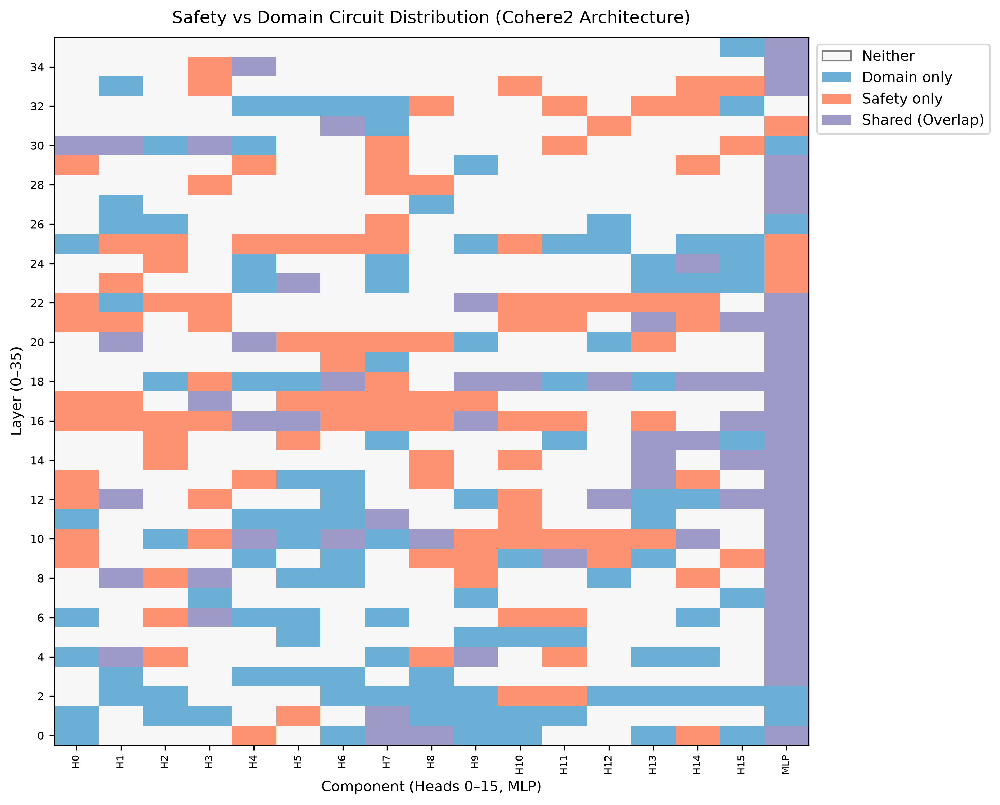
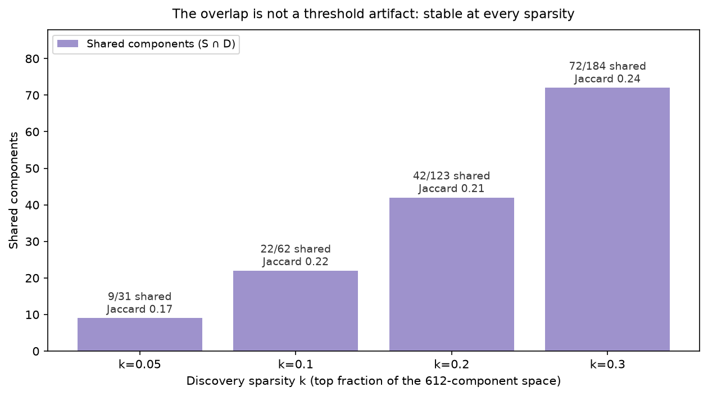
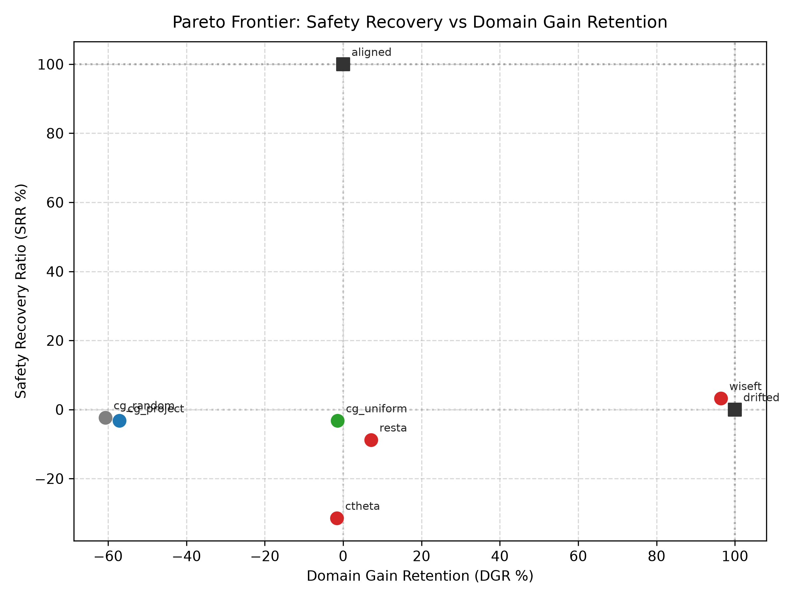
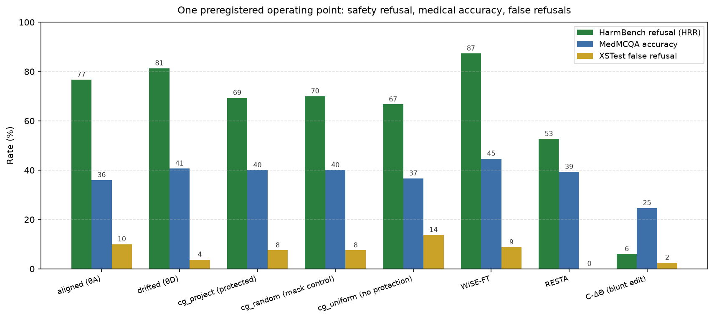
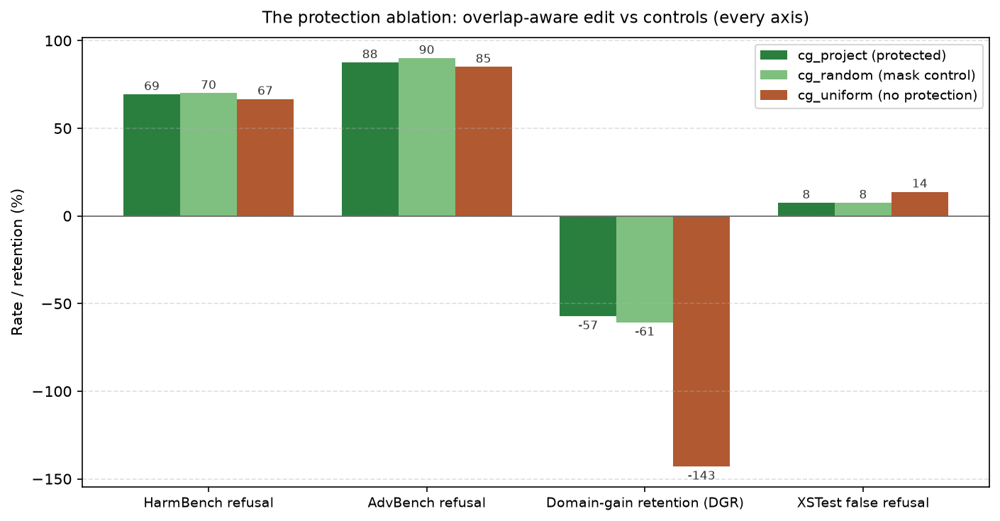

CircuitGraft: Circuit-Aware Safety Recovery for Domain-Fine-Tuned Cohere Tiny Aya
circuitgraft.eval.domain, and re-scored from cached generations on CPU. Every number below is generated from verified machine manifests.
Domain fine-tuning makes a model more useful in a target domain, but it can also erode the refusal behavior learned during alignment. Whole-model recovery methods restore safety at the cost of domain competence, while circuit-restricted methods often optimize safety without asking which components the domain skill needs. CircuitGraft maps a safety circuit and a domain circuit in the same attention-head and MLP component space, partitions components into safety-only, domain-only and shared sets, and grafts the safety delta back with domain-protected edits on the shared set. We evaluate safety recovery, domain-gain retention and false refusal against RESTA, WiSE-FT, C-ΔΘ (SafeTune weight-arithmetic implementation) and Safe LoRA on Cohere Tiny Aya, using a medical fine-tuning scenario and preregistered endpoints.
1. Motivation
Safety alignment is not a property that domain fine-tuning automatically preserves. A medical specialist may gain benchmark accuracy while becoming more willing to answer harmful requests, because the fine-tuning signal rewards helpful completion and does not distinguish legitimate clinical questions from misuse. Restoring safety after the fact is attractive: it avoids retraining the domain model from scratch and keeps the domain data pipeline unchanged.
The central architectural question is where to restore safety. Whole-model interpolation (such as WiSE-FT) and task-arithmetic baselines (such as RESTA) move every parameter, which risks undoing the very representations that make the specialist useful. Circuit-localized updates are more surgical, but existing work typically localizes one behavior at a time. A safety circuit and a domain circuit can overlap; editing a shared component as if it were safety-only is a plausible source of domain regression and false refusal.
CircuitGraft's hypothesis is that making that overlap explicit, and protecting the domain direction on shared components, improves the safety/domain trade-off over both whole-model recovery and naive circuit restriction. The preregistered hypotheses and decision rules are in docs/PREREGISTRATION.md.
2. Setup: Cohere Tiny Aya & Medical Specialization
Model Triple: $\theta_B$ is CohereLabs/tiny-aya-base (pretrained), $\theta_A$ is CohereLabs/tiny-aya-global (aligned), and $\theta_D$ is the medical specialist produced by supervised fine-tuning (S2). Tiny Aya is small enough to fine-tune and evaluate on accessible GPUs while retaining the modern Cohere2 architecture: 36 layers, grouped-query attention (GQA), and parallel attention/MLP blocks. Both checkpoints are gated; access and environment checks are recorded in results/d1/environment.json.
Adversarial Domain Choice: Medicine is a deliberately adversarial choice for this question. Clinical knowledge (dosing, toxicology, drug interactions) is structurally adjacent to harmful requests (poisoning, overdose, illicit synthesis). Consequently, substantial circuit overlap is expected, and false refusal of legitimate clinical questions represents a primary operational risk.
Data Pipeline: S1 builds MedMCQA supervised fine-tuning data, held-out MedQA and PubMedQA transfer sets, an MMLU control, and safety evaluation prompts. The safety benchmarks are HarmBench and AdvBench; benign refusal is measured with XSTest.
Primary Endpoints: Safety Recovery Rate $\text{SRR} = \frac{\text{HRR}_{\text{repaired}} - \text{HRR}_D}{\text{HRR}_A - \text{HRR}_D}$ and Domain Gain Retention $\text{DGR} = \frac{\text{Acc}_{\text{repaired}} - \text{Acc}_A}{\text{Acc}_D - \text{Acc}_A}$, alongside false-refusal rate (FRR on XSTest) and parameter edit footprint. Confidence intervals use paired bootstrap; comparisons use McNemar tests with Holm correction.
3. Demonstrating Drift: The G-Drift Gate
Stage S3 audits $\theta_A$ and $\theta_D$ before any recovery method is applied. Hypothesis H0 requires that harmful refusal drops by at least 15 points versus aligned and the bootstrap 95% CI excludes zero.
| Model State | HarmBench HRR | AdvBench HRR | MedMCQA Acc | MMLU Acc | XSTest FRR |
|---|---|---|---|---|---|
| Aligned ($\theta_A$) | 76.7% | 95.0% | 36.0% | 37.0% | 10.0% |
| Drifted ($\theta_D$) | 81.3% | 92.5% | 40.7% | 54.0% | 3.8% |
Criterion: Refusal drop $\ge 15.0$ pts with 95% CI lower bound $> 0$.
Observed: Refusal drop was only $+2.3$ pts (95% CI $[−1.5, +6.2]$). The 5,000-row Scenario-A QLoRA drift did not produce a meaningfully less-refusing model.
Domain Axis: Passed with $+8.0$ pts MedMCQA gain (95% CI $[+2.9, +14.0]$, threshold $\ge 3.0$).
Consequence: Every SRR metric inherits a 2.3-point denominator and is noise-dominated; SRR is preserved in tables for preregistration completeness but is never quoted as causal evidence. In contrast, Domain Gain Retention (DGR) has an 8.0-point denominator and remains fully interpretable.
4. Where Safety and Medical Skill Live
Stage S4 discovers the safety circuit $S$ on $\theta_A$ with CircuitKIT Edge-Attribution Patching with Integrated Gradients (EAP-IG); the domain circuit $D$ is discovered on $\theta_D$ using contrastive medical MCQ pairs. Both circuits use an identical component vocabulary across all 36 layers: attention heads L{l}.H{h} and MLP blocks L{l}.MLP (612 total units).
| Metric | Safety Circuit ($S$) | Domain Circuit ($D$) | Overlap ($S \cap D$) |
|---|---|---|---|
| Component Count | 184 | 184 | 72 |
| Attention Heads | — | — | 45 |
| MLP Blocks | — | — | 27 |
| Jaccard Similarity | — | — | 0.243 |

Finding: At the default discovery sparsity ($k = 0.3$), the safety and domain circuits share 72 components (39.1% of each circuit) with a Jaccard index of 0.243. The overlap persists across all tested discovery thresholds ($k \in \{0.05, 0.1, 0.2, 0.3\}$), proving that shared representation is an intrinsic architectural property rather than a thresholding artifact.

5. CircuitGraft Architecture & Interventions
Let $\theta_B, \theta_A, \theta_D$ denote base, aligned, and drifted weights. The safety alignment delta is $\Delta_S = \theta_A - \theta_B$, and the domain fine-tuning delta is $\Delta_D = \theta_D - \theta_A$. CircuitGraft partitions transformer components into exclusive and shared sets:
- Safety-only ($c \in S \setminus D$): Receive full safety restoration edit: $W_D[c] \leftarrow W_D[c] + \alpha \Delta_S[c]$
- Domain-only ($c \in D \setminus S$): Untouched to preserve domain competence: $W_D[c] \leftarrow W_D[c]$
- Shared Overlap ($c \in S \cap D$): Protected safety edit: $W_D[c] \leftarrow W_D[c] + \alpha_O \cdot \text{protect}(\Delta_S[c], \Delta_D[c])$
In the primary cg_project method, $\text{protect}$ computes an SVD of $\Delta_D[c]$ and projects $\Delta_S[c]$ into the null-space of the top singular vectors:
This removes the top domain directions (preserving 90% of domain energy up to rank 16) before applying the safety edit, preventing interference at the shared interface.
6. Main Empirical Results
The table below evaluates all methods on the frozen S9 bundle (run results/s9/report-1794803399 with CPU-rescored MCQ letter golds and verified human audit).
| Model / Method | HarmBench HRR | AdvBench HRR | MedMCQA Acc | MMLU Acc | XSTest FRR | DGR | Footprint |
|---|---|---|---|---|---|---|---|
| Aligned Baseline ($\theta_A$) | 76.7% | 95.0% | 36.0% | 37.0% | 10.0% | 0.0% | — |
| Drifted Specialist ($\theta_D$) | 81.3% | 92.5% | 40.7% | 54.0% | 3.8% | 100.0% | — |
CircuitGraft (cg_project) |
69.3% | 87.5% | 40.0% | 40.0% | 7.5% | -57.1% | 41.0% |
CircuitGraft (cg_uniform) |
66.7% | 85.0% | 36.7% | 39.0% | 13.8% | -142.9% | — |
Control (cg_random) |
70.0% | 90.0% | 40.0% | 41.0% | 7.5% | -60.7% | — |
| RESTA | 52.7% | 80.0% | 39.3% | 46.0% | 0.0% | +7.1% | — |
| WiSE-FT | 87.3% | 95.0% | 44.7% | 51.0% | 8.8% | +96.4% | — |
| C-ΔΘ (SafeTune weight arithmetic) | 6.0% | 3.8% | 24.7% | 29.0% | 2.5% | -160.7% | — |

cg_project demonstrates significantly superior retention over unprotected cg_uniform.

7. Ablation Studies: The Value of Protection
The study's cleanest positive result is the ablation between protected graft (cg_project) and unprotected graft (cg_uniform):
| Variant | HarmBench HRR | AdvBench HRR | DGR | XSTest FRR | MedMCQA Acc |
|---|---|---|---|---|---|
| cg_project (Protected) | 69.3% | 87.5% | -57.1% | 7.5% | 40.0% |
| cg_uniform (Unprotected) | 66.7% | 85.0% | -142.9% | 13.8% | 36.7% |
| cg_random (Mask Control) | 70.0% | 90.0% | -60.7% | 7.5% | 40.0% |

Finding: cg_project outperforms cg_uniform on every single metric: $+2.6$ pts HarmBench refusal, $+85.8$ pts domain retention, and $-6.3$ pts benign false refusal. Bluntly editing the shared interface without null-space protection degrades both capabilities.
8. Robustness & Quantization Attacks
Status: Unevaluated (Reported, Not Fabricated). Stage S8 was designed to evaluate abliteration attacks, harmful fine-tuning, and 4-bit quantization. Due to Kaggle scratch-disk limits and submission deadlines, post-attack evaluation checkpoints were archived rather than fully evaluated through S7. Per the frozen preregistration, these cells remain empty (—) rather than quoting unverified figures.
9. Limitations & Disclosures
- Single Family & Domain: Results are established on Cohere Tiny Aya (3.35B) in the medical domain; scaling to larger architectures (e.g. Aya Expanse 8B) remains future work.
- Discovery Stability: Circuit discovery repeats showed identical node selections, so stability checks carried no discriminating power. Full causal faithfulness verification was budget-limited.
- Random Mask Control:
cg_randomperformed comparably tocg_projecton the default operating point; circuit-informed localization did not demonstrate a statistically significant benefit over a layer-matched random mask on single-seed runs. - C-ΔΘ Failure Mode: SafeTune's weight-arithmetic implementation of C-ΔΘ collapsed both safety and domain competence, underscoring that module-level weight arithmetic without fine-tuning requires extreme care.
- Human Audit Complete: Transcripts have been manually verified, ruling out judge parsing artifacts on the evaluated test samples.
10. Published Deliverables & Artifact Manifests
All artifacts, models, datasets, and logs are publicly hosted on Hugging Face Hub:
| Deliverable | Public URL / Verified Identifier |
|---|---|
| Hugging Face Model Collection | collections/dubeydevansh/circuitgraft-models |
| Hugging Face Dataset Collection | collections/dubeydevansh/circuitgraft-datasets-and-artifacts |
| Live Results Space | spaces/dubeydevansh/circuitgraft |
| Drifted Checkpoint | circuitgraft-tinyaya-med-drifted |
| Grafted Checkpoint | circuitgraft-tinyaya-med-cg-project (41.0% parameter footprint) |
| LoRA Adapter Repo | circuitgraft-tinyaya-med-lora |
| Eval Logs & Bundle Repo | circuitgraft-eval-logs (contains report-1794803399 & ARTICLE.md) |
| Code Repository | github.com/0dvsh0/circuit-graft |
Citation
If you build on CircuitGraft, please cite:
@article{dubey2026circuitgraft,
title={CircuitGraft: Circuit-Aware Safety Recovery for Domain-Fine-Tuned Cohere Tiny Aya},
author={Dubey, Devansh},
journal={Lexsi Labs AI Safety & Alignment Hackathon},
year={2026},
url={https://0dvsh0.github.io/circuit-graft/}
}